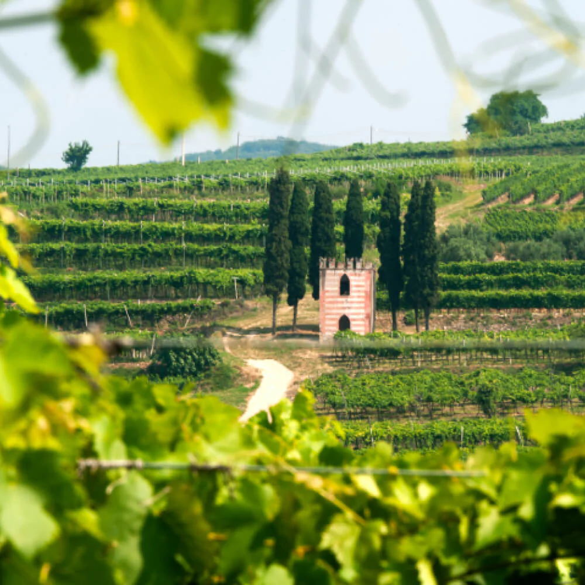

Grapes are de-stemmed and softly pressed. Then, the juice is chilled to allow sediment to naturally separate, and natural yeasts are added to initiate fermentation. Bubbly undergoes two different fermentations: the first in stainless steel tanks for approximately 15 days at 19- 20° C, and the second — which produces bubbles — for about 3 days.
Stefano Nandi Wine Director at Montelvini Group. Born in Montebelluna, just a few Km from Montelvini, on the 11/11/1969, Stefano has always been passionate about wine, as most people are, in this rich and historical area for wine production. After graduating from the prestigious “Cerletti” Oneology Wine institute in Conegliano, he immediately started his career in the wine business, and after a few experiences, he settled in at Montelvini where he now has been working as Wine Director almost 30 years. His passion and commitment towards Montelvini, have made the winery what it is today. His vast experience allows themus to lead the way with new trends, while keeping their roots in the history of their family.
The province of Treviso is flat and features an abundance of water and waterways. The climate is mild, while the temperature ranges on average from 27ºF in January and February, with rare, sporadic snowfall, to 95ºF in July and August. During ripening, the high difference in temperature between night and day gives the grapes excellent aromatic properties. The average annual rainfall exceeds 35 inches, with peaks typically recorded in autumn, while heavy storms are common in summer. The soil is mainly clayey, with several substrates of limestone and occasionally rock fragments.

We believe the best pairing for wine is whatever you already had planned. But, if you did want to explore wine pairings, Archer Roose Bubbly is a great complement to a lot of beautiful foods.
Pairing Pro Tip: chewy, sticky candy is perfect with Bubbly, as the acidity and bubbles work to un-stick your teeth. Candy charcuterie, anyone?
* Seafood
* Savory / smoked cheeses & meats
* Fruits
* Fried chicken
* Mushrooms / vegetarian dishes
* Thai food
Chef Adam Moore has been busy creating globally-inspired dishes which celebrate the regions we source our wines. Where to start with Italian-inspired recipes? Veneto, Italy (the birthplace of our Bubbly) is renowned for fresh seafood, street carts, and delicious meats and cheeses. The latest recipe to feature Bubbly is a Parma Street Cart Pork Sandwich - a perfect balance of salty, zesty, crispy, crunchy.